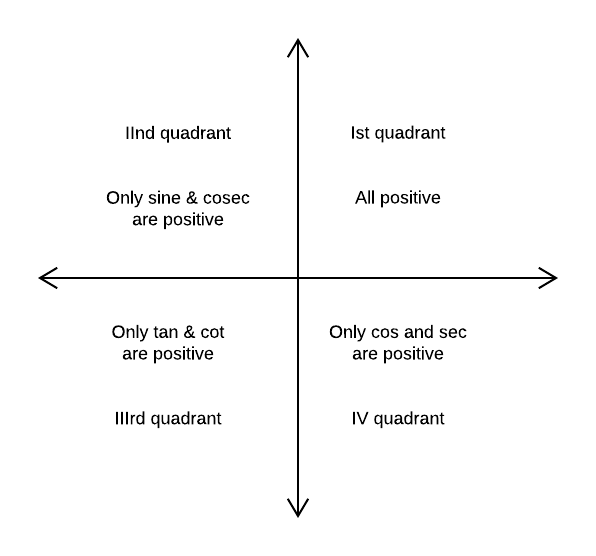

In a right angle triangle
sin\(\theta\) = \(p\over h\); cos\(\theta\) = \(b\over h\); tan\(\theta\) = \(p\over b\); cosec\(\theta\) = \(h\over p\); sec\(\theta\) = \(h\over b\) and cot\(\theta\) = \(b\over p\)
where 'p' is perpendicular ; 'b' is base and 'h' is hypotenuse.
Basic trigonometric Identities :
(1) \(sin\theta\).\(cosec\theta\) = 1
(2) \(cos\theta\).\(sec\theta\) = 1
(3) \(tan\theta\).\(cot\theta\) = 1
(4) \(tan\theta\) = \(sin\theta\over{cos\theta}\) & \(cot\theta\) = \(cos\theta\over{sin\theta}\)
(5) \(sin^2\theta\) + \(cos^2\theta\) = 1
(6) \(sec^2\theta\) - \(tan^2\theta\) = 1
(7) \(cosec^2\theta\) - \(cot^2\theta\) = 1
Example : If \(sin\theta\) + \(sin^2\theta\) = 1, then prove that \(cos^{12}\theta\) + 3\(cos^{10}\theta\) + 3\(cos^{8}\theta\) + \(cos^6\theta\) - 1 = 0
Solution : Given that \(sin\theta\) = 1 - \(sin^2\theta\) = \(cos^2\theta\)
L.H.S., = \(cos^6\theta\)(\(cos^2\theta + 1)^3\) - 1 = \(sin^3\theta\)(1 + \(sin\theta)^3\) - 1 = (\(sin\theta + sin^2\theta)^3\) = 1
Signs of trigonometric functions in different quadrants

Values of T-Ratio of some standard angles
| Angles T-Ratio |
0 | \(\pi\over 6\) | \(\pi\over 4\) | \(\pi\over 3\) | \(\pi\over 2\) | \(\pi\) |
| \(sin\theta\) | 0 | \(1\over 2\) | \(1\over \sqrt{2}\) | \(\sqrt{3}\over 2\) | 1 | 0 |
| \(cos\theta\) | 1 | \(\sqrt{3}\over 2\) | \(1\over \sqrt{2}\) | \(1\over 2\) | 0 | -1 |
| \(tan\theta\) | 0 | \(1\over \sqrt{3}\) | 1 | \(\sqrt{3}\) | N.D | 0 |
| \(cot\theta\) | N.D | \(\sqrt{3}\) | 1 | \(1\over \sqrt{3}\) | 0 | N.D |
| \(sec\theta\) | 1 | \(2\over \sqrt{3}\) | \(\sqrt{2}\) | 2 | N.D | -1 |
| \(cosec\theta\) | N.D | 2 | \(\sqrt{2}\) | \(2\over \sqrt{3}\) | 1 | N.D |
N.D = Not defined
Graph of trigonometric Functions :
y = sinx
y = cosx
y = tanx
y = cotx
y = secx
y = cosecx
Domain, Ranges and Periodicity of trigonometric function
| T-Ratio | Domain | Range | Period |
| sin x | R | [-1, 1] | \(2\pi\) |
| cos x | R | [-1, 1] | \(2\pi\) |
| tan x | R - {(2n+1)\(\pi/2\); n \(\in\) I} | R | \(\pi\) |
| cot x | R - {n\(\pi\) : n \(\in\) I} | R | \(\pi\) |
| sec x | R - {(2n+1)\(\pi/2\); n \(\in\) I} | (-\(\infty\), -1] \(\cup\) [1, \(\infty\)] | \(2\pi\) |
| cosec x | R - {n\(\pi\) : n \(\in\) I} | (-\(\infty\), -1] \(\cup\) [1, \(\infty\)] | \(2\pi\) |
Trigonometric Ratios of the sum & difference of two angles :
(1) sin(A + B) = sin A cos B + cos A sin B
(2) sin(A - B) = sin A cos B - cos A sin B
(3) cos(A + B) = cos A cos B - sin A sin B
(4) cos(A - B) = cos A cos B + sin A sin B
(5) tan(A + B) = \(tan A + tan B\over {1 - tan A tan B}\)
(6) tan(A - B) = \(tan A - tan B\over {1 + tan A tan B}\)
(7) cot(A + B) = \(cot B cot A - 1\over {cot B + cot A}\)
(8) cot(A - B) = \(cot B cot A + 1\over {cot B - cot A}\)
Some more results :
(i) \(sin^2A\) - \(sin^2B\) = sin(A + B). sin(A - B) = \(cos^2B\) - \(cos^2A\)
(ii) \(cos^2A\) - \(sin^2B\) = cos(A + B). cos(A - B)
Example : Prove that tan \(70^{\circ}\) = cot \(70^{\circ}\) + 2cot \(40^{\circ}\)
Solution : L.H.S. = tan \(70^{\circ}\) = tan (\(20^{\circ} + 50^{\circ}\)) = \(tan 20^{\circ} + tan 50^{\circ}\over {1 - tan 20^{\circ} tan 20^{\circ}}\)
or tan \(70^{\circ}\) - tan \(20^{\circ}\)tan \(50^{\circ}\)tan \(70^{\circ}\) = tan \(20^{\circ}\) + tan \(50^{\circ}\)
or tan \(70^{\circ}\) = tan \(20^{\circ}\)tan \(50^{\circ}\)tan \(70^{\circ}\) + tan \(20^{\circ}\) + tan \(50^{\circ}\)
= 2tan \(50^{\circ}\) + tan \(20^{\circ}\)
= 2cot \(40^{\circ}\) + cot \(70^{\circ}\)
Formulae to transform the product into sum or difference :
(i) 2 sin A cos B = sin(A + B) + sin(A - B)
(ii) 2 cos A sin B = sin(A + B) - sin(A - B)
(iii) 2 cos A cos B = cos(A + B) - cos(A - B)
(iv) 2 sin A sin B = cos(A - B) - cos(A + B)
Formulae to transform the sum or difference into product :
(i) sin C + sin D = 2 sin(\(C + D\over 2\)) cos(\(C - D\over 2\))
(ii) sin C - sin D = 2 cos(\(C + D\over 2\)) sin(\(C - D\over 2\))
(iii) cos C + cos D = 2 cos(\(C + D\over 2\)) cos(\(C - D\over 2\))
(iv) cos C - cos D = 2 sin(\(C + D\over 2\)) sin(\(D - C\over 2\))
Example : Show that sin \(12^{\circ}\).sin \(48^{\circ}\).sin \(54^{\circ}\) = \(1\over 8\)
Solution : L.H.S. = \(1\over 2\)[2sin\(12^{\circ}\).sin \(48^{\circ}\).sin \(54^{\circ}\)]
= \(1\over 2\)[cos\(36^{\circ}\) - cos \(60^{\circ}\)]sin \(54^{\circ}\) = \(1\over 2\)[cos\(36^{\circ}\)sin\(54^{\circ}\) - \(1\over 2\)sin\(54^{\circ}\)]
= \(1\over 4\)[2cos\(36^{\circ}\)sin \(54^{\circ}\) - sin \(54^{\circ}\)] = \(1\over 4\)[sin\(90^{\circ}\) + sin\(18^{\circ}\) - sin \(54^{\circ}\)]
= \(1\over 4\)[1 - (sin\(54^{\circ}\) - sin \(18^{\circ}\))] = \(1\over 4\)[1 - 2sin\(18^{\circ}\)cos\(36^{\circ}\)]
= \(1\over 4\)[1 - \({2sin18^{\circ}}\over {cos18^{\circ}}\)cos\(18^{\circ}\)cos\(36^{\circ}\)] = \(1\over 4\)[1 - \(sin36^{\circ}cos36^{\circ}\over {cos18^{\circ}}\)]
\(1\over 4\)[1 - \(2sin36^{\circ}cos36^{\circ}\over {2cos18^{\circ}}\)] = \(1\over 4\)[1 - \(sin72^{\circ}\over {2sin72^{\circ}}\)] = \(1\over 4\)[1 - \(1\over 2\)] = \(1\over 8\) = R.H.S.